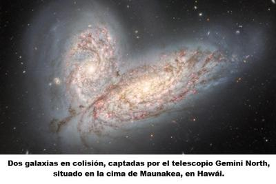

Es que al mirar una noche estrellada, todos sentimos una sensación de paz y armonía, de belleza y perfección, lo que nos induce a pensar que existe un «orden perfecto» y un «diseño inteligente». Vemos allá arriba la bóveda celeste silenciosa y majestuosa, que inspira una sensación profunda de serenidad, quietud, orden. Una experiencia estética —genuina y humana— que no es más que una ilusión. Que no corresponde a una descripción objetiva del cosmos.


Pero la ciencia nos lo dice sin rodeos, sin piedad: el universo no es ningún jardín cuidadosamente diseñado para nuestra contemplación espiritual. Es sólo un sistema físico regido por leyes impersonales, donde la violencia energética es la norma, y la indiferencia absoluta es el principio operativo. Por lo que esa sensación de paz que experimentamos es psicológica, no cosmológica.
Es que el espacio nos parece silencioso… y lo es. Pero no porque sea pacífico. Es silencioso porque en el vacío no hay aire, y el sonido necesita un medio material para propagarse. Si pudiéramos «escuchar» el universo, percibiríamos un estruendo constante de explosiones, colisiones y radiación letal. Porque el cosmos es un lugar donde a cada momento explotan supernovas, liberando en segundos más energía que nuestro Sol en toda su vida; donde los agujeros negros —esas regiones donde la gravedad es tan extrema que ni la luz escapa— devoran estrellas y desgarran sistemas planetarios completos. Y donde hay constantes estallidos de rayos gamma, los eventos más energéticos conocidos desde el Big Bang. Pero además, galaxias enteras colisionan, atravesándose y deformándose mutuamente durante millones de años
¿Y si en algunos de esos sistemas existían planetas habitados? ¿Y si había allí seres conscientes, con sueños, afectos y civilizaciones? —simplemente al universo no le importa. No existe ningún tribunal cósmico que detenga a una supernova por compasión. Ni una mano providencial que salve a una especie avanzada de la aniquilación gravitacional. Porque el cosmos no distingue entre una roca inerte y una mente autoconsciente.
Pero a pesar de esto, el discurso religioso insiste en que toda esa inmensidad fue diseñada por una inteligencia perfecta, buena y omnisciente. Y que cada estrella, cada galaxia y cada constante física, fueron calibradas pensando —en última instancia— en nosotros, la especie homo sapiens que habita este minúsculo planeta. Obviamente se trata de una afirmación extraordinaria, y como toda afirmación extraordinaria, requiere evidencia extraordinaria. Pero no la hay.
Más bien lo que observamos es un universo donde el 99.999999% del espacio es hostil a la vida, donde la mayoría de los planetas son inhabitables, la radiación cósmica es letal, y las estrellas nacen y mueren en procesos violentos. Por tanto, afirmar que todo esto fue creado pensando específicamente en la especie humana, es una expresión extrema de antropocentrismo.
Por eso, cuando algún gurú de la autoayuda como Paulo Coelho proclama que «el universo conspira a tu favor», solamente te está vendiendo una metáfora emocional, no te está haciendo una descripción física del cosmos. Esa es sin duda una frase reconfortante, pero vacía desde el punto de vista científico —igual como ocurre con las religiones. Porque la realidad es que el universo no conspira, ni planea, ni desea, ni protege. Simplemente es como es.
Y para mayor desencanto de quienes quieren ver y oír sólo cosas placenteras y reconfortantes, porque se han propuesto cultivar un «pensamiento positivo», ni siquiera nuestro más amado refugio es eterno. Porque incluso la relativa estabilidad que disfrutamos en nuestro planeta es temporal: dentro de aproximadamente cinco mil millones de años, nuestro Sol agotará su hidrógeno, y se expandirá hasta convertirse en una gigante roja. Y en ese proceso, probablemente engullirá a Mercurio, Venus y, muy posiblemente, a la Tierra, nuestro amado hogar. Así, toda nuestra historia —civilizaciones, religiones, guerras, poemas, bibliotecas, templos y dioses— desaparecerá sin ninguna ceremonia cósmica. Y no habrá nadie a quien le importe.
Porque la realidad es que nada en las ecuaciones de la física sugiere que el universo está «destinado» a que existamos para siempre. Porque nuestra permanencia no es una promesa cósmica, sino sólo una ilusión psicológica.
Ahora bien, aceptar la indiferencia del universo no implica negar su belleza, aunque sea una belleza sin propósito. Al contrario, la hace más asombrosa. Es verdad, las estrellas no brillan para nosotros, ni las galaxias giran para complacernos, ni las leyes físicas fueron escritas pensando en nosotros, pero en medio de todo ese caos y hostilidad, aquí estamos: somos una especie primate que sobrevivió y evolucionó en un minúsculo planeta, pero que es capaz de comprender —al menos parcialmente— la vastedad del cosmos. Y eso nos hace comprender que no somos el centro de todo, ni el objetivo o plan de nadie. Que somos sólo una consecuencia. Pero lejos de disminuir nuestra dignidad, esa comprensión la eleva. Porque si el universo no fue hecho para nosotros, entonces todo significado que existe lo creamos nosotros.
El cosmos no es un ciertamente un lugar perfecto, diseñado por una mente divina. Es más bien un escenario inmenso, dinámico y violento, gobernado por leyes impersonales. Pero en medio de esa gran indiferencia, la conciencia humana es un fenómeno extraordinario —no por estar protegido por algún «Dios», sino por existir a pesar de todo.
Al final los humanos somos hasta ahora, como decía Carl Sagan, la única forma conocida en que el universo se percibe a sí mismo. Somos esa parte del universo —compuesta de elementos formados en estrellas (polvo de estrellas)— que se convirtió en materia consciente, capaz de estudiar, comprender y maravillarse de sí misma. No somos observadores externos, sino una parte activa del universo mismo, que ha adquirido la capacidad de pensar y autoanalizarse. Y esta es, probablemente, nuestra verdadera grandeza.
[Godless Freeman]
[Crédito de imagen: CNN]
Comentarios
Comments powered by Disqus